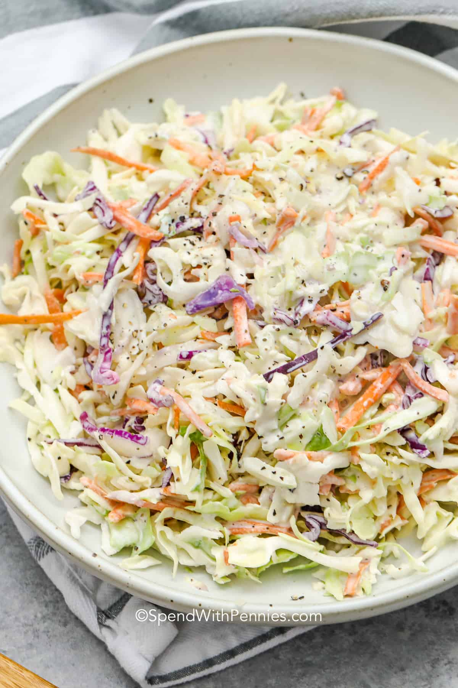

Super easy recipe that not even losers can fail
Slap yo mama good
so on and so forth
Ingredients
COLESLAW MIX
- 3 cups green cabbage
- 2 cups purple cabbage
- 1 cup carrot
DRESSING
- 1/2 cup mayo
- 1 tablespoon white vinegar
- 1/2 tablespoon cider vinegar
- 2 teaspoon sugar
- 1/2 teaspoon celery seeds
- salt and pepper to taste
Steps
- Combine all dressing ingredients into a bowl
- Toss with cabbage & carrots. Refrigerate at least 1 hour before serving to allow flavors to blend